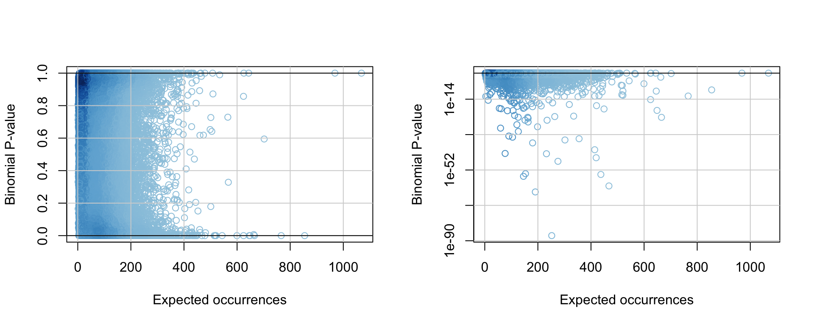
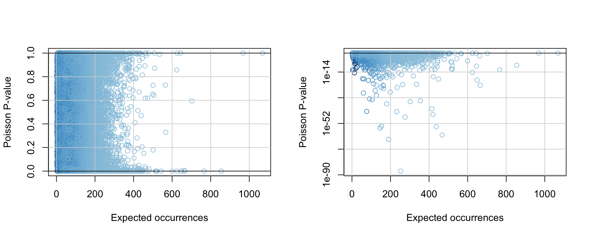
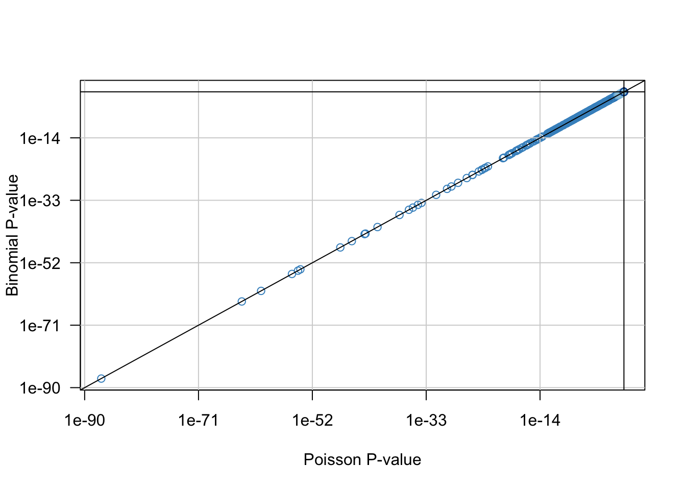
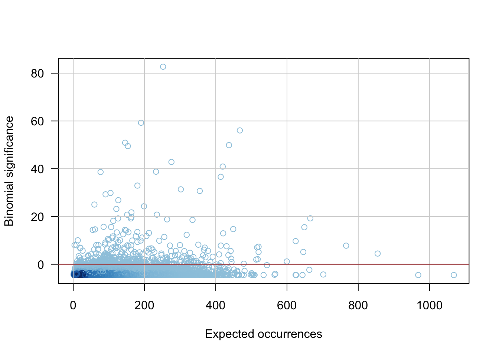
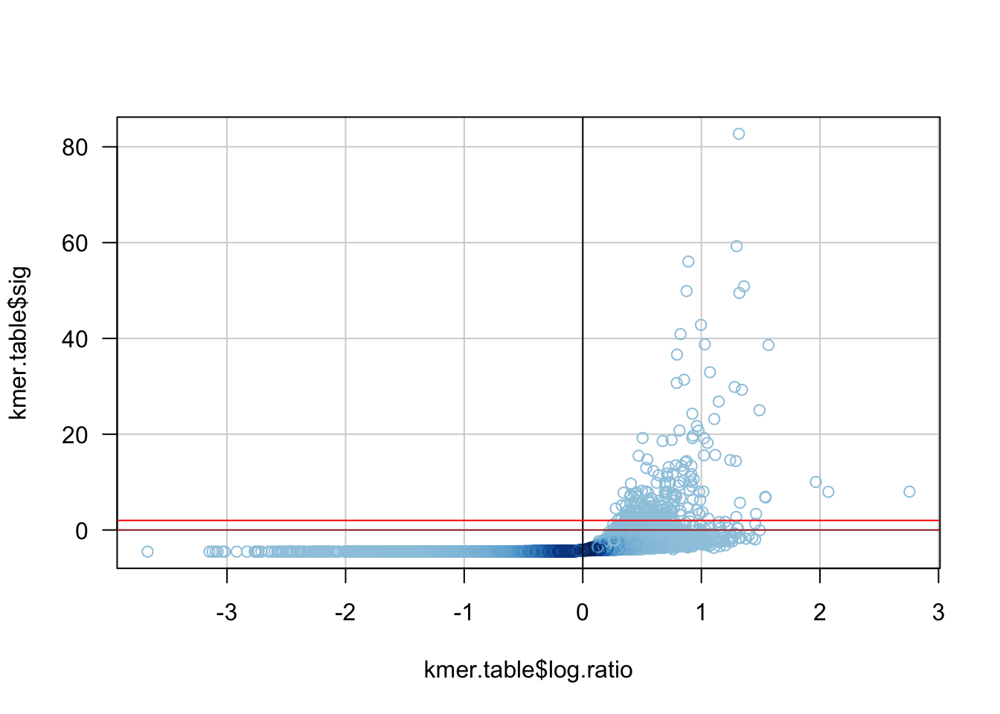
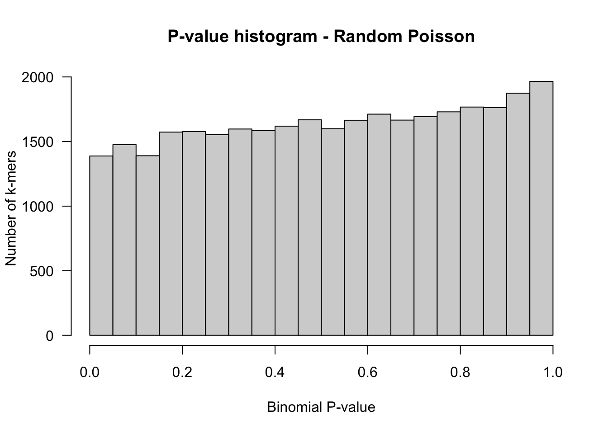

TP –Tests multiples : détection de k-mères exceptionnels
Probabilités et statistique pour la biologie (STAT1)
Jacques van Helden & Lucie Khamvongsa-Charbonniner & Yvon Mbouamboua
2018-11-22
But de ce tutoriel
- Apprendre à manipuler des tableaux de données (objet R data.frame)
- Travailler sur les colonnes de tableaux de données
- Se familiariser par la pratique avec les différentes corrections de tests multples.
- Représentations graphiques associées aux tests multiples (histogramme des P-valeurs, MA plot, Volcano plot)
Jeu de données : contexte
Nous avons utilisé le logiciel oligo-analysis de la suite Regulatory Sequence Analysis Tools (RSAT; http://rsat.eu/) pour compter les occurrences de chaque octanucléotide dans les pics de liaison du facteur transcriptionnel Sox2 détectés par une expérience de ChIP-seq.
Conditions d’analyse
- Nombre de séquences: \(S = 8014\)
Taille totale des séquences: \(L = 2.776.509\)
On dénombre uniquement les occurrences renouvelantes (non-chevauchantes).
Les octanucléotides ont été regroupés par paires réverse complémentaires (analyse insensible au brin).
Le programme a également calculé la probabilité a priori (colonne
priordu tableau) de chaque octanucléotide sur base d’un modèle de Markov d’ordre 5. Autrement dit, la probabilité a priori d’un octanucléotide (\(p\)) est estimée sur bases des probabilités d’hexanucléotides observées dans l’ensemble des séquences.
Questions à traiter
Durant ce tutoriel, nous allons explorer ce jeu de données, et calculer une série de statistiques pour détecter les octanucléotides (abbréviation: 8nt) significativement sur-représentés.
Téléchargement du tableau de données
- A la racine de votre compte, créez un dossier de travail nommé
TP_stat1_multiple_tests_kmers.
## Create work directory
work.dir <- '~/TP_stat1_multiple_tests_kmers'
dir.create(work.dir, recursive = TRUE, showWarnings = FALSE)
setwd(work.dir)- Téléchargez dans ce dossier le fichier de comptage des k-mères, qui se trouve sur le site Wbe du cours.
https://jvanheld.github.io/stat1/data/Sox2_oligos/Sox2-peaks_8nt_mkv5.tsv.gz
kmer.file <- 'Sox2-peaks_8nt_mkv5.tsv.gz'
kmer.url <- file.path("https://jvanheld.github.io/stat1/data/Sox2_oligos/", kmer.file)
## Download the kmer occurrence file in the work directory
# download.file(url = kmer.url, destfile = kmer.file)Chargement d’un fichier tabulaire de données
Nous allons charger le tableau de comptage des k-mères dans une variable nomée kmer.table, de type data.frame.
Les data frames sont des tableaux à deux dimensions (lignes/colonnes) qui permettent d’associer - un nom à chaque ligne, - un nom à chaque colonne - un type de données (nombres, chaînes de caractères, …) est défini automatiquement pour chaque colonne sur base de son contenu
setwd(work.dir)
## Check the files
list.files()[1] "Sox2-peaks_8nt_mkv5.tsv.gz"## Load the file
kmer.table <- read.delim(
sep = "\t",
file = kmer.file,
header = 1,
row.names = 1)
## Check the content of the original data table
names(kmer.table) ## Column content[1] "occurrences" "prior" head(kmer.table) ## First rows occurrences prior
aaaaaaaa|tttttttt 658 0.000409754
aaaaaaac|gttttttt 285 0.000160186
aaaaaaag|cttttttt 393 0.000194751
aaaaaaat|attttttt 317 0.000143588
aaaaaaca|tgtttttt 317 0.000177584
aaaaaacc|ggtttttt 166 0.000088000tail(kmer.table) ## Last rows occurrences prior
tttcaaaa|ttttgaaa 223 0.000087900
tttccaaa|tttggaaa 212 0.000074400
tttcgaaa|tttcgaaa 11 0.000003810
tttgaaaa|ttttcaaa 250 0.000103607
tttgcaaa|tttgcaaa 150 0.000065600
ttttaaaa|ttttaaaa 231 0.000074100dim(kmer.table) ## Dimensions of the data frame[1] 32860 2Sélection de lignes et de colonnes
Il existe plusieurs façons de sélectionner des lignes et colonnes d’un tableau.
# Afficher le contenu de la cellule en 10ème ligne, 2ème colonne
kmer.table[10,2] [1] 9.95e-05## Afficher la 10ème ligne
kmer.table[10,] occurrences prior
aaaaaagc|gctttttt 148 9.95e-05## Afficher la 2ème colonne
## Pour éviter d'afficher des dizaines de milliers de valeurs, nous affichonss eulement les 200 premières valeurs en englobant le résultat dans la fonction head()
head(kmer.table[,2] , n = 200) [1] 0.000409754 0.000160186 0.000194751 0.000143588 0.000177584
[6] 0.000088000 0.000019200 0.000072100 0.000145540 0.000099500
[11] 0.000121909 0.000066500 0.000093000 0.000061100 0.000102422
[16] 0.000062400 0.000170144 0.000077600 0.000094100 0.000053800
[21] 0.000067500 0.000056800 0.000012500 0.000059500 0.000009280
[26] 0.000011400 0.000011900 0.000011200 0.000031900 0.000037500
[31] 0.000050800 0.000040900 0.000122102 0.000065000 0.000089900
[36] 0.000047800 0.000080200 0.000069100 0.000014000 0.000059300
[41] 0.000087000 0.000070200 0.000069800 0.000045200 0.000030700
[46] 0.000038300 0.000043500 0.000036200 0.000077800 0.000044100
[51] 0.000047100 0.000038500 0.000044100 0.000038900 0.000007670
[56] 0.000046200 0.000063000 0.000054000 0.000057400 0.000054300
[61] 0.000033800 0.000037500 0.000030400 0.000038100 0.000293794
[66] 0.000078800 0.000100701 0.000183554 0.000121763 0.000074600
[71] 0.000017200 0.000085500 0.000108664 0.000090300 0.000093200
[76] 0.000070700 0.000041400 0.000049200 0.000043900 0.000072700
[81] 0.000071400 0.000059400 0.000080800 0.000048400 0.000076300
[86] 0.000058800 0.000017100 0.000067000 0.000011000 0.000013500
[91] 0.000014300 0.000009560 0.000035800 0.000057200 0.000067800
[96] 0.000068600 0.000011500 0.000007890 0.000009930 0.000006370
[101] 0.000013300 0.000014500 0.000004430 0.000011900 0.000016200
[106] 0.000010700 0.000010500 0.000008710 0.000006570 0.000010500
[111] 0.000013800 0.000012400 0.000040000 0.000026400 0.000029200
[116] 0.000027700 0.000048300 0.000041600 0.000008460 0.000046700
[121] 0.000050800 0.000043400 0.000049500 0.000052400 0.000025900
[126] 0.000041600 0.000043200 0.000046700 0.000197935 0.000100964
[131] 0.000129087 0.000109806 0.000126611 0.000061600 0.000017800
[136] 0.000080400 0.000128450 0.000093200 0.000106893 0.000067200
[141] 0.000047300 0.000043700 0.000069900 0.000050100 0.000097300
[146] 0.000075300 0.000115782 0.000065300 0.000107203 0.000081700
[151] 0.000020800 0.000094800 0.000015100 0.000015700 0.000017800
[156] 0.000012500 0.000044400 0.000061400 0.000088700 0.000066400
[161] 0.000136934 0.000072700 0.000113437 0.000060500 0.000106662
[166] 0.000080800 0.000024100 0.000098000 0.000103523 0.000070800
[171] 0.000075900 0.000057400 0.000034200 0.000061300 0.000057200
[176] 0.000046700 0.000042500 0.000029100 0.000037000 0.000026500
[181] 0.000059800 0.000045100 0.000008010 0.000055500 0.000053200
[186] 0.000042900 0.000049500 0.000046100 0.000032300 0.000042900
[191] 0.000038100 0.000045900 0.000117405 0.000049700 0.000060200
[196] 0.000055400 0.000069800 0.000039500 0.000007280 0.000044500## Afficher les lignes 10 à 15
kmer.table[10:15,] occurrences prior
aaaaaagc|gctttttt 148 0.000099500
aaaaaagg|cctttttt 204 0.000121909
aaaaaagt|actttttt 142 0.000066500
aaaaaata|tatttttt 164 0.000093000
aaaaaatc|gatttttt 136 0.000061100
aaaaaatg|catttttt 156 0.000102422## Afficher les colonnes 1 et 2 pour les lignes 10 à 20
kmer.table[10:15, 1:2] occurrences prior
aaaaaagc|gctttttt 148 0.000099500
aaaaaagg|cctttttt 204 0.000121909
aaaaaagt|actttttt 142 0.000066500
aaaaaata|tatttttt 164 0.000093000
aaaaaatc|gatttttt 136 0.000061100
aaaaaatg|catttttt 156 0.000102422## Sélection d'une ligne par son nom
kmer.table["gattacca|tggtaatc",] occurrences prior
gattacca|tggtaatc 53 2.07e-05kmer.table[c("gattacca|tggtaatc", "aaaaaaaa|tttttttt"),] occurrences prior
gattacca|tggtaatc 53 0.000020700
aaaaaaaa|tttttttt 658 0.000409754## Sélection d'une colonne par son nom
## (ici, 50 premières lignes seulement )
head(n = 50, kmer.table[, "occurrences"]) [1] 658 285 393 317 317 166 49 92 302 148 204 142 164 136 156 99 556
[18] 182 182 141 183 133 31 149 32 21 21 25 96 75 126 86 481 151
[35] 195 135 206 143 36 139 252 116 162 119 98 113 126 88 249 105## Notation rapide
head(n = 50, kmer.table$occurrences) [1] 658 285 393 317 317 166 49 92 302 148 204 142 164 136 156 99 556
[18] 182 182 141 183 133 31 149 32 21 21 25 96 75 126 86 481 151
[35] 195 135 206 143 36 139 252 116 162 119 98 113 126 88 249 105## Notation équivalente
kmer.table$occurrences[1:50] [1] 658 285 393 317 317 166 49 92 302 148 204 142 164 136 156 99 556
[18] 182 182 141 183 133 31 149 32 21 21 25 96 75 126 86 481 151
[35] 195 135 206 143 36 139 252 116 162 119 98 113 126 88 249 105Exercice
Utilisez la fonction
plot()pour dessiner un nuage de points indiquant le nombre d’occurrences (\(Y\)) en fonction de la probabilité a priori de chaque 8nt (\(X\)). Soignez le graphique comme au TP précédent.Dessinez un histogramme des occurrences au moyen de la fonction
hist().
Calcul de statistiques sules colonnes
Nous allons calculer le nombre attendu d’occurrences pour chaque oligonucléotide, en tenant compte de sa probabilité a priori.
kmer.sum <- sum(kmer.table$occurrences)
## Check the sum of prior probabilities
## (~1 but there are some rounding errors)
sum(kmer.table$prior)[1] 1.009168kmer.table$exp.occ <- kmer.table$prior * kmer.sum
plot(kmer.table$exp.occ, kmer.table$occurrences, las = 1,
col = densCols(kmer.table$exp.occ, kmer.table$occurrences),
xlab = "Expected occurrences",
ylab = "Observed occurrences")
grid(lty = "solid", col = "gray")
abline(a = 0, b = 1)Exercice
Calculez les statistiques suivantes pour l’ensemble des oligos.
A chaque étape, ajoutez à la table kmer.table une colonne avec la nouvelle statistique calculée. Ceci permettra d’exporter ensuite l’ensemble des résultats.
Dessinez pour chaque statistique calculée un graphique qui représente le mieux possible les résultats, en faisant ressortir les points pertinents.
- Rapport entre occurrences observées et attendues (obs/exp)
- Le logarithme en base 2 de ce rapport (log-ratio)
- \(P(X= x)\): probabilité binomiale d’observer exactement \(X\) occurrences
- P-valeur de sur-représentation: \(P(X \ge x)\) au moyen de la binomiale.
P-valeur de sur-représentation: \(P(X \ge x)\) au moyen de la Poisson.
Dessinez un nuage de points comparant les P-valeurs binomiale et Poisson. Utilisez des axes logarithmiques pour mettre en évidence les faibles p-valeurs.
Calculez la E-valeur binomiale.
Calculez la significativité de cette E-valeur, définie ici comme \(sig_{E} = -log_{10}(E)\).
Dessinez un graphique avec la significativité (\(Y\)) en fonction du log-ratio (\(X\)).
Dessinez un histogramme des p-valeurs avec des intervalles de 5%.
Générez une colonne de nombre d’occurrences aléatoires tirés selon une loi de Poisson dont l’espérance est prise dans la colonne
prior.Refaites les mêmes calculs et dessins (log-ratio, significativité, volcano plot, histogramme des p-valeurs) avec ces occurrences aléatoires.
Sauvegardez le tableau de résultat dans un fichier nommé
Sox2-peaks_8nt_mkv5_overstats.tsv.
Solutions
1. Rapport entre occurrences observées et attendues (obs/exp)
## Observed / expected ratio
kmer.table$ratio <- kmer.table$occurrences / kmer.table$exp.occ
## Plot ratio as a function of the expected occurrences
plot(kmer.table$exp.occ, kmer.table$ratio,
col = densCols(kmer.table$exp.occ, kmer.table$ratio),
xlab = "expected occurrences",
ylab = "obs/exp ratio"
)
grid(lty = "solid")
abline(h = 1)Méfiez-vous du rapport obs/exp.
2. Le logarithme en base 2 de ce rapport (log-ratio)
## log-ratio
kmer.table$log.ratio <- log(kmer.table$ratio, base = 2)
## Plot log-ratio as a function of the expected occurrences
plot(kmer.table$exp.occ, kmer.table$log.ratio,
col = densCols(kmer.table$exp.occ, kmer.table$log.ratio),
xlab = "expected occurrences",
ylab = "log2(obs/exp ratio)"
)
grid(lty = "solid")
abline(h = 0)3. \(P(X= x)\): probabilité binomiale d’observer exactement \(X\) occurrences
## Number of trials is the sum of all k-mer occurrences
N <- sum(kmer.table$occurrences)
## Binomial PMF
kmer.table$dbinom <- dbinom(x = kmer.table$occurrences, size = N, prob = kmer.table$prior)
par(mfrow = c(1,2))
plot(kmer.table$exp.occ, kmer.table$dbinom,
col = densCols(kmer.table$exp.occ, kmer.table$dbinom),
xlab = "Expected occurrences",
ylab = "Binomial density"
)
grid(lty = "solid")
abline(h = c(0,1))
## log Y axis
plot(kmer.table$exp.occ, kmer.table$dbinom,
col = densCols(kmer.table$exp.occ, kmer.table$dbinom),
log = "y",
xlab = "Expected occurrences",
ylab = "Binomial density"
)
grid(lty = "solid")
abline(h = 1)4. P-valeur de sur-représentation: \(P(X \ge x)\) au moyen de la binomiale.
## Binomial P-value
kmer.table$Pbinom <- pbinom(
q = kmer.table$occurrences - 1,
size = N,
prob = kmer.table$prior,
lower.tail = FALSE)
par(mfrow = c(1,2))
plot(kmer.table$exp.occ, kmer.table$Pbinom,
col = densCols(kmer.table$exp.occ, kmer.table$Pbinom),
xlab = "Expected occurrences",
ylab = "Binomial P-value"
)
grid(lty = "solid")
abline(h = c(0,1))
## log Y axis
plot(kmer.table$exp.occ, kmer.table$Pbinom,
col = densCols(kmer.table$exp.occ, kmer.table$Pbinom),
log = "y",
xlab = "Expected occurrences",
ylab = "Binomial P-value"
)
grid(lty = "solid")
abline(h = 1)
par(mfrow = c(1,1))5. P-valeur de sur-représentation: \(P(X \ge x)\) au moyen de la Poisson.
## Binomial P-value
kmer.table$Ppois <- ppois(
q = kmer.table$occurrences - 1,
lambda = kmer.table$exp.occ,
lower.tail = FALSE)
par(mfrow = c(1,2))
plot(kmer.table$exp.occ, kmer.table$Ppois,
col = densCols(kmer.table$exp.occ, kmer.table$Pois),
xlab = "Expected occurrences",
ylab = "Poisson P-value"
)
grid(lty = "solid")
abline(h = c(0,1))
## log Y axis
plot(kmer.table$exp.occ, kmer.table$Ppois,
col = densCols(kmer.table$exp.occ, kmer.table$Pois),
log = "y",
xlab = "Expected occurrences",
ylab = "Poisson P-value"
)
grid(lty = "solid")
abline(h = 1)
par(mfrow = c(1,1))6. Dessinez un nuage de points comparant les P-valeurs binomiale et Poisson. Utilisez des axes logarithmiques pour mettre en évidence les faibles p-valeurs.
plot(kmer.table$Ppois, kmer.table$Pbinom,
col = densCols(kmer.table$Ppois, kmer.table$Pbinom),
xlab = "Poisson P-value", ylab = "Binomial P-value",
log = "xy",
las = 1)
grid(lty = "solid")
abline(a = 0, b = 1)
abline(h = 1)
abline(v = 1)
7. Calculez la E-valeur binomiale.
nb.tests <- nrow(kmer.table) # Number of tests
kmer.table$Ebinom <- kmer.table$Pbinom * nb.tests
par(mfrow = c(1,2))
plot(kmer.table$exp.occ, kmer.table$Ebinom,
col = densCols(kmer.table$exp.occ, kmer.table$Ebinom),
las = 1,
xlab = "Expected occurrences",
ylab = "Binomial E-value"
)
grid(lty = "solid")
abline(h = c(0, N))
abline(h = 0, col = "brown")
## log Y axis
plot(kmer.table$exp.occ, kmer.table$Ebinom,
col = densCols(kmer.table$exp.occ, kmer.table$Ebinom),
las = 1,
log = "y",
xlab = "Expected occurrences",
ylab = "Binomial E-value"
)
grid(lty = "solid")
abline(h = c(0, N))
abline(h = 0, col = "brown")par(mfrow = c(1,1))8. Calculez la significativité de cette E-valeur, définie ici comme \(sig_{E} = -log_{10}(E)\).
kmer.table$sig <- -log(kmer.table$Ebinom, base = 10)
plot(kmer.table$exp.occ, kmer.table$sig,
col = densCols(kmer.table$exp.occ, kmer.table$sig),
las = 1,
xlab = "Expected occurrences",
ylab = "Binomial significance"
)
grid(lty = "solid")
abline(h = 0, col = "brown")
9. Dessinez un graphique avec la significativité (\(Y\)) en fonction du log-ratio (\(X\)).
plot(kmer.table$log.ratio, kmer.table$sig,
col = densCols(kmer.table$log.ratio, kmer.table$sig),
las = 1,
panel.first = grid(lty="solid"))
abline(v=0)
abline(h=0, col="brown")
abline(h=2, col="red")
10. Dessinez un histogramme des p-valeurs avec des intervalles de 5%.
hist(kmer.table$Pbinom,
breaks=seq(from = 0, to = 1, by = 0.05), las = 1,
xlab = "Binomial P-value", ylab = "Number of k-mers",
col = "lightgray",
main = "P-value histogram")
11. Générez une colonne de nombre d’occurrences aléatoires tirés selon une loi de Poisson dont l’espérance est prise dans la colonne prior.
kmer.table$rand.occ <- rpois(n = nrow(kmer.table), lambda = kmer.table$exp.occ)12. Refaites les calculs et dessins ci-dessus avec ces occurrences aléatoires.
kmer.table$rand.occ <- rpois(n = nrow(kmer.table), lambda = kmer.table$exp.occ)
kmer.table$rand.Pbinom <- pbinom(q = kmer.table$rand.occ -1, size = N, prob = kmer.table$prior, lower.tail = FALSE)
kmer.table$rand.Ppois <- ppois(q = kmer.table$rand.occ -1, lambda = kmer.table$exp.occ, lower.tail = FALSE)
hist(kmer.table$rand.Ppois,
breaks = seq(from = 0, to = 1, by = 0.05), las = 1,
xlab = "Binomial P-value", ylab = "Number of k-mers",
col = "lightgray",
main = "P-value histogram - Random Poisson")
13. Sauvegardez le tableau de résultat dans un fichier nommé Sox2-peaks_8nt_mkv5_overstats.tsv.
write.table(x = kmer.table,
file = "Sox2-peaks_8nt_mkv5_overstats.tsv",
sep = "\t",
row.names = TRUE,
col.names = NA, quote = FALSE
)Avant de terminer : conservez la trace de votre session
La traçabilité constitue un enjeu essentiel en sciences. La fonction R sessionInfo() fournit un résumé des conditions d’une session de travail: version de R, système opérateur, bibliothèques de fonctions utilisées.
sessionInfo()R version 3.5.1 (2018-07-02)
Platform: x86_64-apple-darwin15.6.0 (64-bit)
Running under: macOS 10.14.1
Matrix products: default
BLAS: /Library/Frameworks/R.framework/Versions/3.5/Resources/lib/libRblas.0.dylib
LAPACK: /Library/Frameworks/R.framework/Versions/3.5/Resources/lib/libRlapack.dylib
locale:
[1] en_US.UTF-8/en_US.UTF-8/en_US.UTF-8/C/en_US.UTF-8/en_US.UTF-8
attached base packages:
[1] stats graphics grDevices utils datasets methods base
other attached packages:
[1] knitr_1.20
loaded via a namespace (and not attached):
[1] compiler_3.5.1 backports_1.1.2 magrittr_1.5
[4] rprojroot_1.3-2 tools_3.5.1 htmltools_0.3.6
[7] yaml_2.2.0 Rcpp_1.0.0 KernSmooth_2.23-15
[10] stringi_1.2.4 rmarkdown_1.10 stringr_1.3.1
[13] digest_0.6.18 evaluate_0.12